Título de la Fotografía
Autor: Nombre · ACR: Ubicación
Organizado por el Gobierno Regional de Cusco
"Voces, Ecosistemas y Paisajes Vivos de las Áreas de Conservación Regional del Perú" — Poniendo en valor nuestro patrimonio natural y el rostro humano detrás de la conservación.
El certamen cuenta con la rigurosa evaluación técnica y artística de destacados referentes de la fotografía de naturaleza, conservación biológica y comunicación ambiental del Perú.
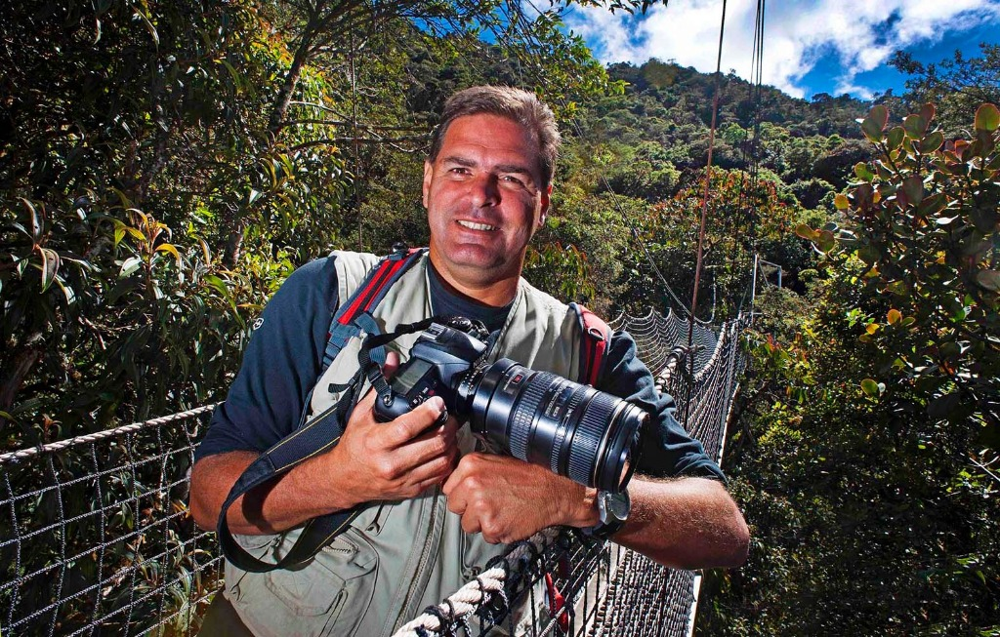
Ingeniero forestal, periodista, editor, fotógrafo profesional y analista de temas ambientales (Lima, agosto de 1967). Sus publicaciones, alrededor de 600 libros y guías sobre naturaleza, cultura y desarrollo sostenible, una docena de enciclopedias y más de un millar de reportajes en revistas del Perú y el extranjero lo han llevado a ser considerado el editor de temas ecológicos más prolífico del país en la última década. Wust es el único peruano que ha publicado cinco artículos en la revista National Geographic.
Actualmente dirige Wust Ediciones. Director de ciencia de Bosques Amazónicos (BAM) y del fondo editorial del Grupo Alta, México. Es miembro del directorio de las organizaciones ACCA y el Instituto del Bien Común-IBC. Durante cinco años, fue miembro del Consejo Directivo del Servicio Nacional de Áreas Naturales Protegidas por el Estado SERNANP, del Comité Técnico del Fondo Nacional para las Áreas Naturales Protegidas por el Estado y del Consejo Nacional del Ambiente. Walter sigue recorriendo el Perú incansablemente y difundiendo sus valores naturales con el objetivo de lograr un desarrollo armónico y sostenible para sus recursos.
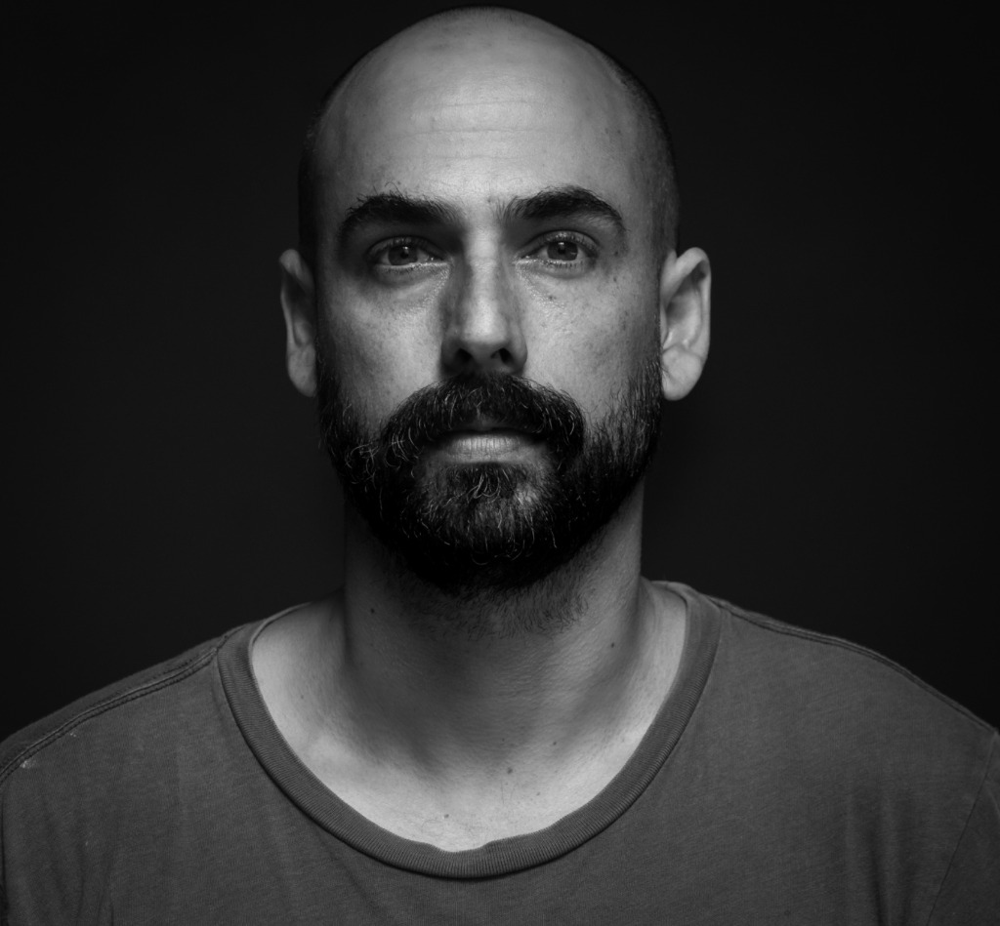
Con 18 años de trayectoria, es fotógrafo, filmmaker y comunicador especializado en conservación, miembro de la International League of Conservation Photographers (iLCP). Fue director de fotografía del cortometraje Shirampari: Herencias del Río, estrenado en el Festival de Sundance en 2023.
Su trabajo se enfoca en conservación, biodiversidad, pueblos indígenas y Amazonía. Actualmente coordina comunicaciones del Programa de Biodiversidad y Pueblos Indígenas de la Sociedad Peruana de Derecho Ambiental (SPDA).
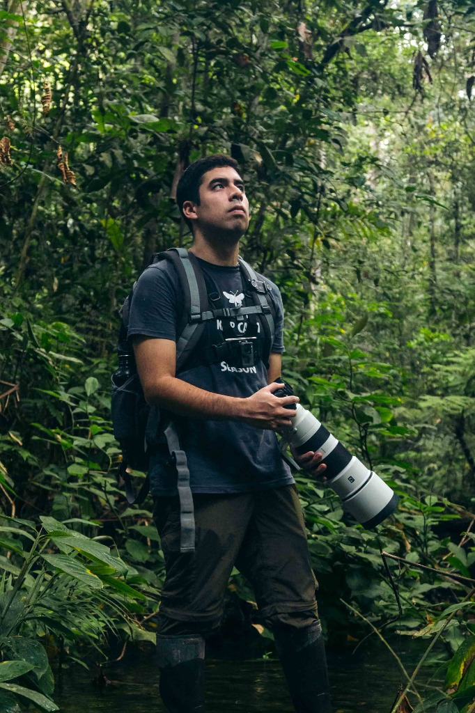
Fotógrafo peruano especializado en fauna amazónica. Su trabajo vincula naturaleza, conservación y ecoturismo, con un enfoque en la documentación de especies poco visibilizadas y amenazadas de nuestros ecosistemas.
Actualmente es embajador de Sony Alpha Latinoamérica, rol desde el cual desarrolla espacios de formación en fotografía con enfoque en educación ambiental.
Fechas clave para la convocatoria, recepción de fotografías, selección de finalistas, exhibición y premiación.
Categorías establecidas en las bases para documentar la flora, fauna, belleza paisajística y el rostro humano de las ACR del Perú.
Fotografías que celebren la riqueza biológica de las Áreas de Conservación Regional, ya sea a través de su flora (árboles, flores, orquídeas, helechos y demás especies vegetales) o de su fauna (mamíferos, aves, reptiles, anfibios, peces e invertebrados). Se valorará especialmente la capacidad de la imagen para transmitir el comportamiento natural, la belleza y el valor ecológico de las especies retratadas.
Fotografías que capturen la majestuosidad de los ecosistemas, escenarios naturales y vistas panorámicas que caracterizan a las Áreas de Conservación Regional, reflejando su belleza escénica y su importancia para la conservación del patrimonio natural.
Fotografías que retratan el compromiso, esfuerzo y labor cotidiana de las personas —promotores ambientales, comunidades locales, expresiones de patrimonio cultural inmaterial dentro de las ACR o actividades cotidianas— involucradas en el cuidado y protección de las Áreas de Conservación Regional, poniendo en valor el rostro humano detrás de la conservación.
Reconocimientos e incentivos oficiales establecidos en las bases del concurso.
Un viaje a la Estación Biológica Cocha Cashu (EBCC), ubicada dentro del Parque Nacional del Manu. El premio incluye la salida y el retorno desde la ciudad de Cusco, y está sujeto al cronograma de actividades y a la disponibilidad de botes que maneja la EBCC, durante el año 2026 o 2027. Las fechas y condiciones serán coordinadas por San Diego Zoo Wildlife Alliance Perú.
Asimismo, incluye la difusión de sus fotografías en la sala de exhibición durante los días del III Congreso Nacional de Áreas de Conservación Regional.
Un (01) paquete/tour a la Laguna Humantay, de 2 días y 1 noche, a cargo de la agencia Mountain Lodges Perú. Las fechas y condiciones estarán sujetas a coordinación previa con el Gobierno Regional del Cusco (GORE Cusco) y la ACR Choquequirao.
Asimismo, incluye la difusión de sus fotografías en la sala de exhibición durante los días del III Congreso Nacional de Áreas de Conservación Regional.
Diploma de reconocimiento y mención honrosa, que incluye la difusión de sus fotografías en la sala de exhibición durante los días del III Congreso Nacional de Áreas de Conservación Regional.
Durante los días de desarrollo del III Congreso Nacional de Áreas de Conservación Regional, los asistentes podrán votar por la fotografía que más los impresione.
El ganador de esta categoría recibirá un (01) paquete/tour para una (01) persona a la ruta Salkantay-Santa Teresa (excepto Machu Picchu), de 3 días y 2 noches, con la agencia Mountain Lodges Perú. Las fechas y condiciones estarán sujetas a coordinación previa con el Gobierno Regional del Cusco (GORE Cusco) y la ACR Choquequirao.
La organización se reserva el derecho de declarar vacante el premio de cualquier categoría, en caso las fotografías presentadas no cumplan con los estándares de calidad, criterios técnicos o requisitos establecidos por el jurado a cargo.
Selecciona una categoría para explorar las 5 obras finalistas y haz clic sobre cualquier fotografía para ampliarla en alta resolución.
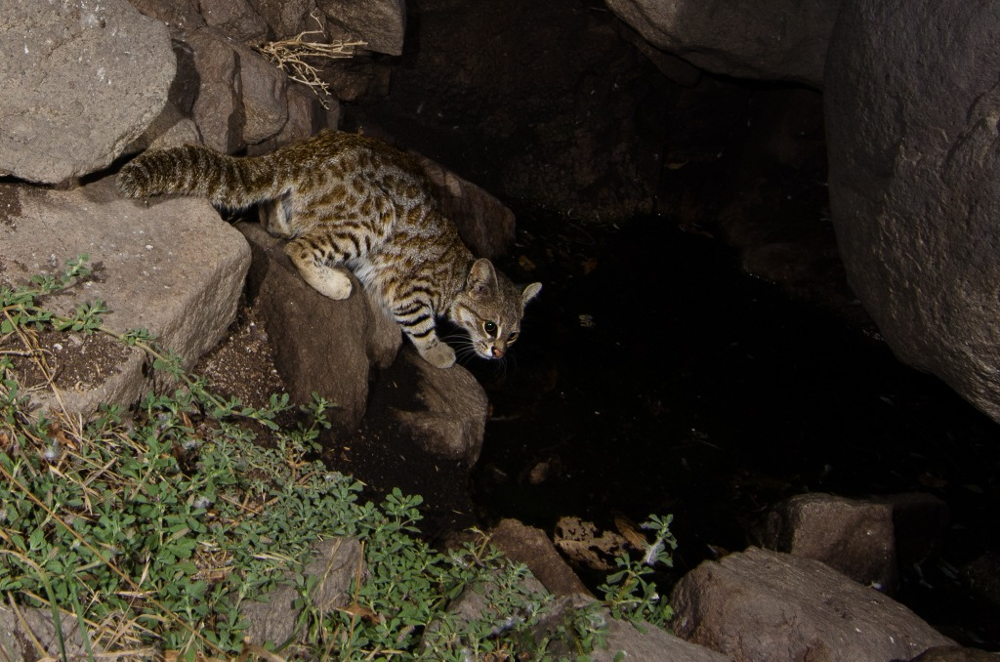
Agrandar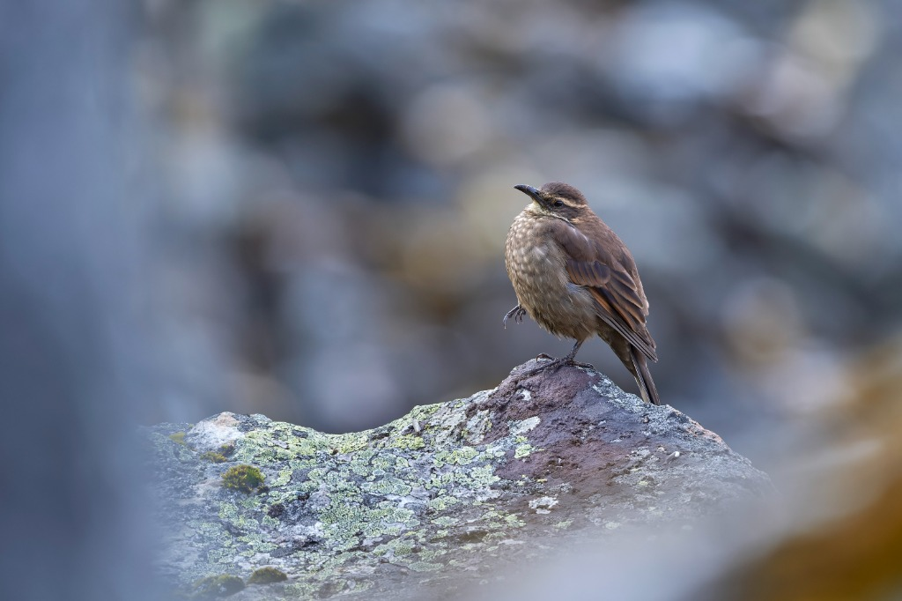
Agrandar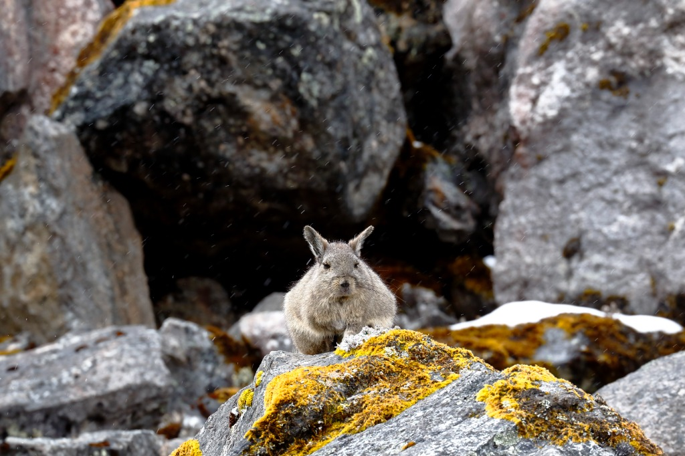
Agrandar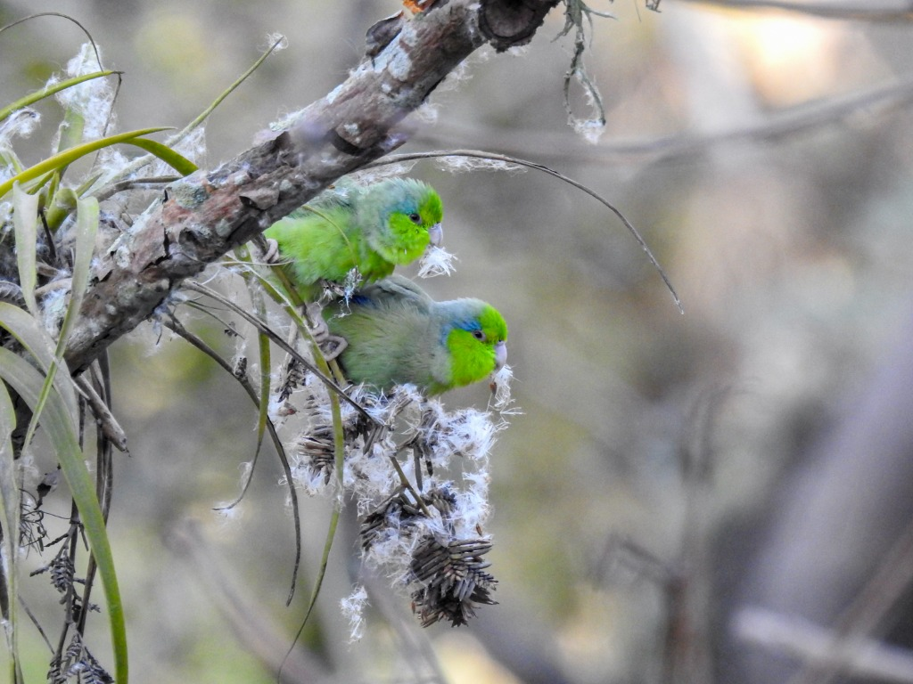
Agrandar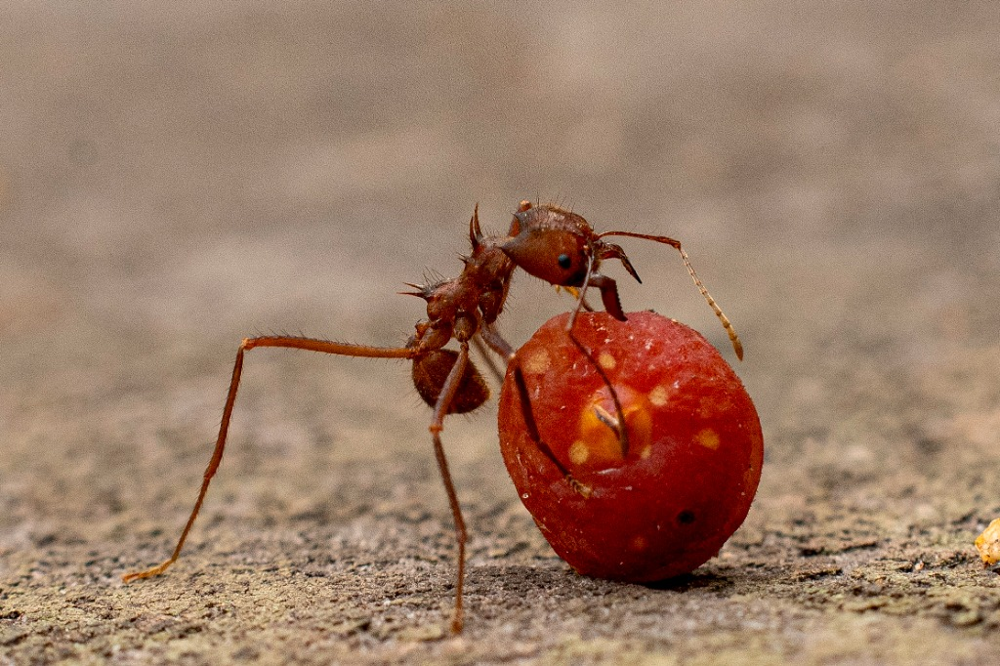
Agrandar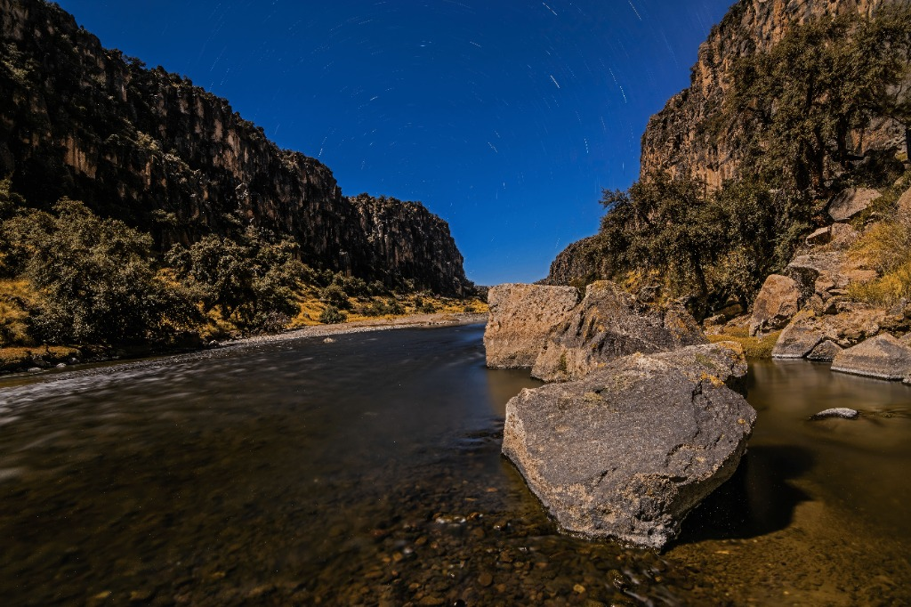
Agrandar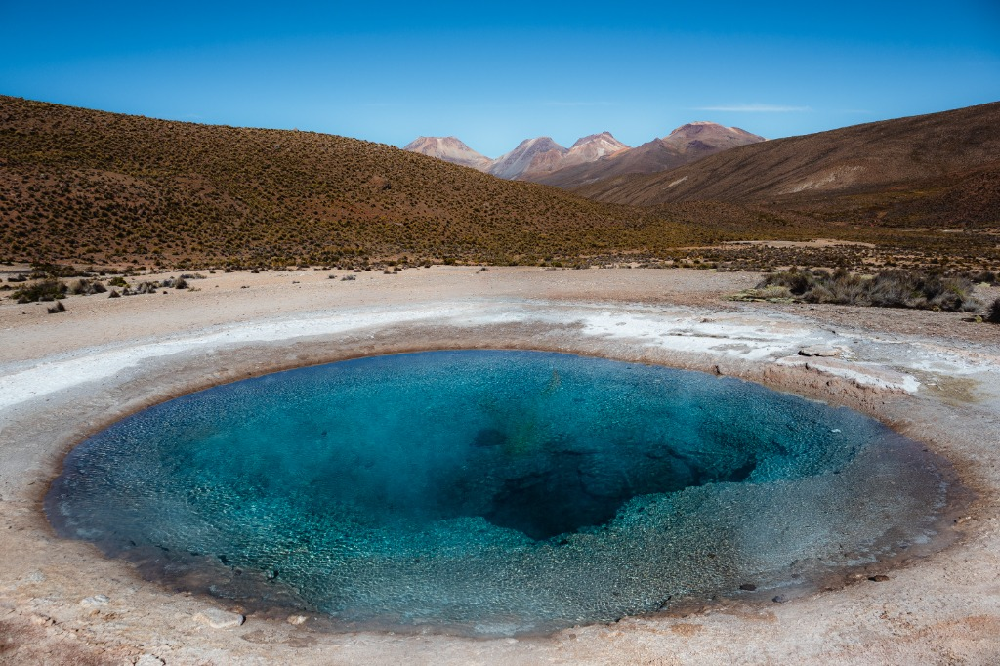
Agrandar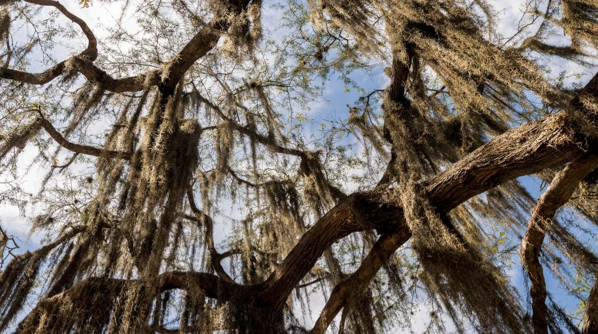
Agrandar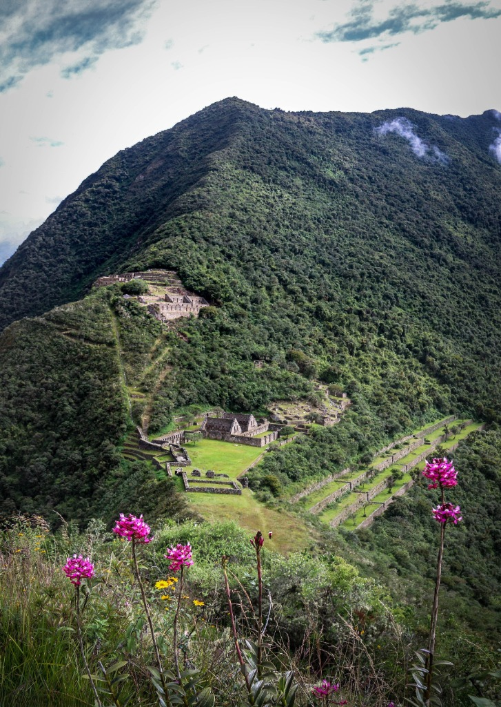
Agrandar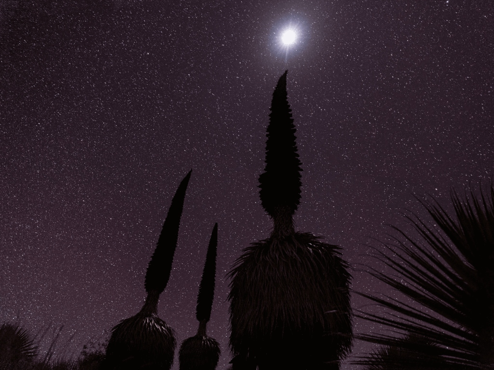
Agrandar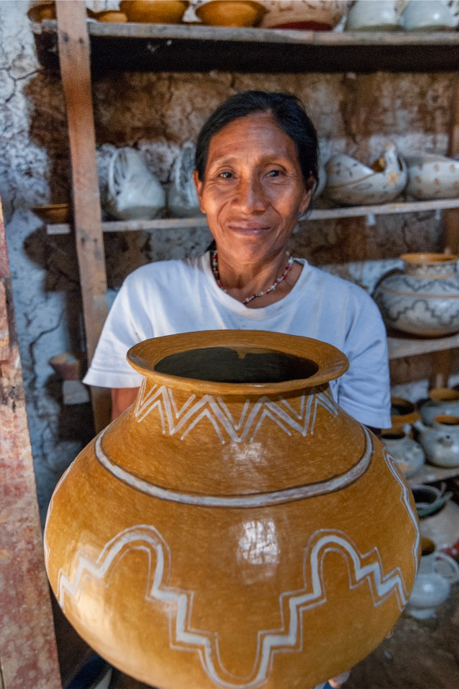
Agrandar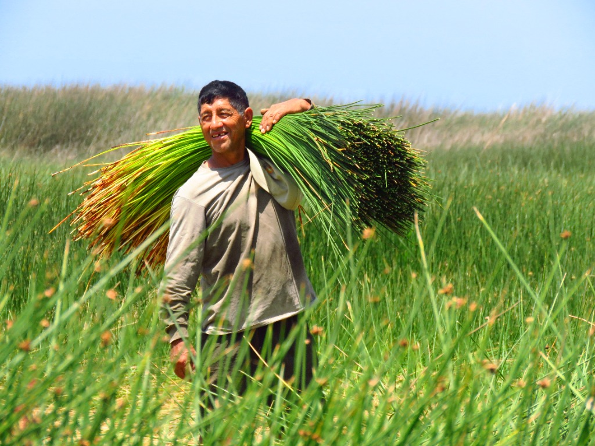
Agrandar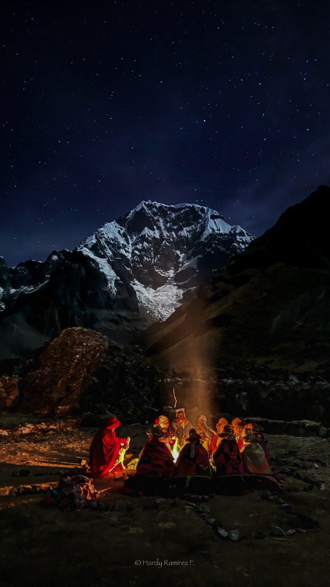
Agrandar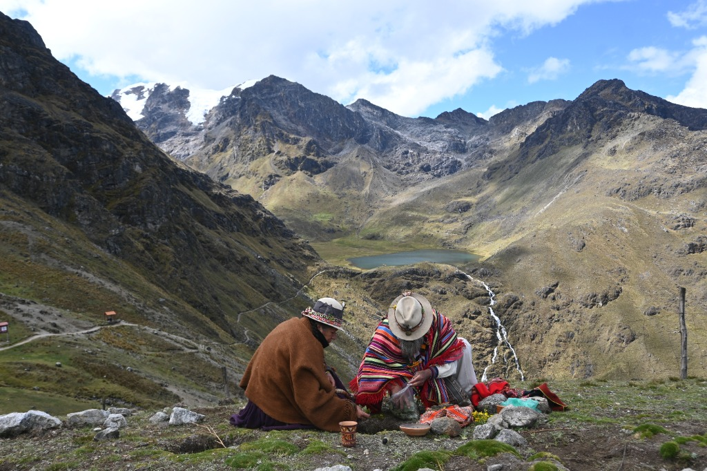
Agrandar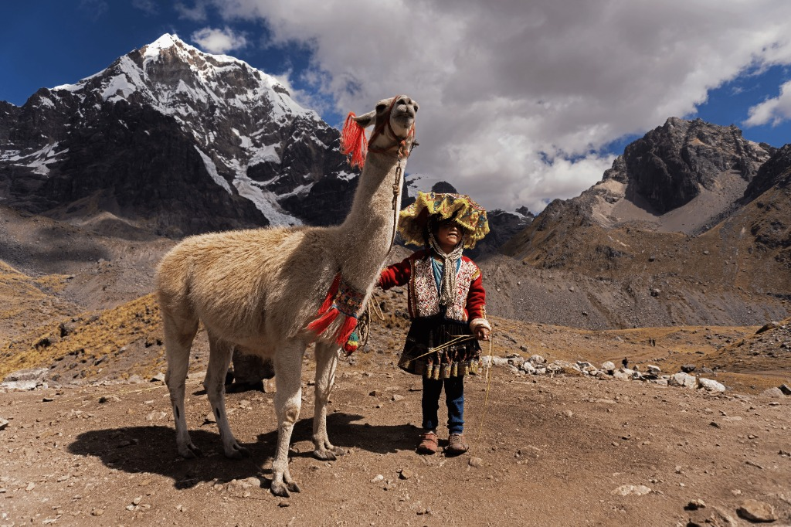
AgrandarAutor: Nombre · ACR: Ubicación